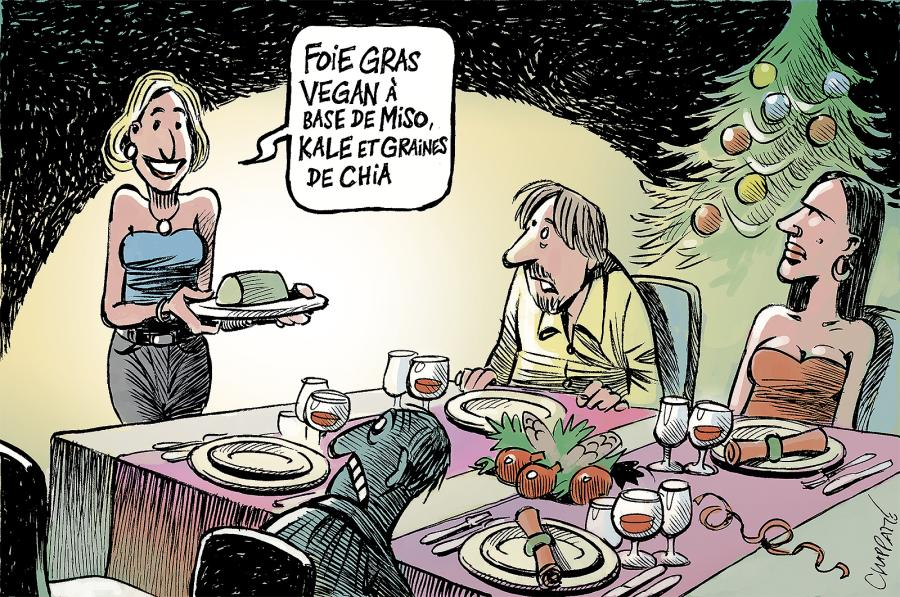

January 1, 2026
I am part of a book club that I love. We read books that will encourage political discussion, and alternate between fiction and non-fiction. I have learnt a lot from the inspiring people in this group, and it has been a safe space (some might say echo chamber) to express anger and say quite some unhinged things at times (I mean, its all relative). Over the course of 6 months, we have explored the connection between many social issues, that is, except for one: animal exploitation. So I did what any caring comrade would, and gathered everyone together to share some information. This is what I said :)
We share a belief in real social equality, an end to oppression of any peoples, and an end to exploitation of the work force under capitalism. We oppose the racists, fascists, homophobes, transphobes, misogynists of this world. It is well known that time and time again, the most marginalised groups have been excluded from mainstream social justice movements. Black women ignored by the suffragettes, the black working class alienated from the civil rights movement, trans people abandoned in the pursuit of gay liberation, and disabled people left out of pretty much every effort for social inclusion.
This is not because people are inherently evil or self interested, it's because we exist in a system that promotes self interest and allows only for minute changes to social mobility within that system. As a result, it is impossible for any one individual to not have blind spots. Privilege often comes with the biggest blinders; with better material conditions you are distanced from social struggle. A significant blind spot that most people have with respect to systemic oppression and exploitation is one in regard to animals.
We admire them, and we enslave them. We learn from them, and we dispose of them. We love them, and we kill them.
Animal exploitation is the most socially accepted injustice in modern society, and gives rise to the cruelest and most abhorrent actions that we carry out as humans. When we think on the greatest crimes of history, what comes to mind might be the actions of Leopold II in the Congo, the treatment of Jewish and other minorities by the Nazis, the enslavement of black people both during the Atlantic slave trade and now in the US prison system, the genocide of Palestinian people.
It is no stretch to say that any of the darkest acts that we disown against humans are a daily occurrence for the animals bred into our agricultural industry. In fact, the methods of these crimes against humans are many times inspired by the exploitation and genocide of animals. Enslavement, rape, mutilation, torture, and murdering infants are all standard procedure, and at a huge scale. We kill upwards of 80 billion land animals every year, and when we include fish this number is in the trillions. If we turned this machine on the human race, we would last less than two months.
So, we have described the systemic oppression of a vulnerable group whose voice we do not recognise or regard, and this violence is widely normalised and justified. Does this sound familiar?
It's important also to add that humans are not spared from the horrors of animal agriculture. Roped into this system of oppression are of course the working poor and the most vulnerable communities worldwide. Slaughterhouses use immigrants with precarious economic conditions to carry out poorly paid, unsafe work, and suffer the devastating psychological effects of constant killing.
The low income areas that host these processing facilities are prone to environmental health impacts like air and water pollution from animal waste. And while the most impoverished people are forced to kill for a living, their reward is total inaccessibility to healthy food and a reliance on cheap, heavily processed animal products. It's worth noting that upward of 70% of African and Asian adult populations are lactose intolerant, but dairy is still pushed heavily and indiscriminately.
With some easy maths we can figure out that feeding 80 billion land animals in order to feed 8 billion humans is not energy efficient. Nearly 80% of agricultural land worldwide is used to rear animals or grow crops for them. This huge effort produces…17% of the world's calorie supply. The natural conclusion to this is the continuation of rainforest destruction to make way for soy farms and cattle ranching in countries like Brazil. To understand this global impact is to understand that it is once again the indigenous communities and struggling nations that have and will ultimately suffer for our taste for animals.
We humans were the first colonisers of the planet and its atmosphere. And of course we did what all good colonisers do: disregard the autonomy of the existing population, enslave them, and profit from them. The view that animals do not deserve the same moral consideration as humans is widely believed, both consciously and subconsciously, and ingrained into our perceived existence as a 'dominant' species.
We can call this ideology speciesism.
Like all supremacist ideologies, when critically considered, it easily falls apart. We can ask, what important qualities do humans and animals share?
We have in common all of the things that make us value human life.
A well known philosophical dialogue in opposition to speciesism is Name the Trait. It challenges you to identify a specific, non-arbitrary characteristic in animals that justifies treating them differently than humans. Many supremacist ideologies have made this distinction in the past, pushing 'scientific' ideas to justify their position.
Time and time again we see the morality defined by the ruling class lead to the mistreatment of the most marginalised groups. It's time that we consider our morality around what best serves the most vulnerable, which, along with many oppressed peoples in society, includes animals.
Our relationship with domesticated animals is an example of our strong cognitive dissonance; to them we afford moral consideration, emotional investment, and even legal protection. This is a common function of a supremacist ideology: to create arbitrary in-groups and out-groups. White supremacy illustrates this perfectly, expanding and shrinking the out-group whenever it benefits the in-group to do so. The treatment of Ireland and its people is the clearest example of this - even with a seat next to the heart of empire and white supremacy, they were ostracised and oppressed in the same way as any other out-group would be.
For most of pre-industrial human history, meat made up a relatively small part of the human diet for the majority of the population. In the post-industrial era we find that capitalism rapidly accelerated the commodification and consumption of animals by leveraging economies of scale (aka factory farming), government subsidies, global markets, and heavy investment in marketing. The marketing and lobbying of the industry is the main reason behind the pervasiveness of animal products in our social and cultural activities.
These powerful tools, alongside the normalisation of these products through their ubiquity, delivers an unassuming appearance of choice when it comes to consuming animals. In reality, people are responding to carefully constructed incentives and constraints.
These same tools are leveraged to manufacture consent for the myriad of atrocities we commit against women, Palestinians, and other oppressed peoples. A direct comparison can be made between downplaying systemic police brutality with stories of 'crime prevention', and glossing over the systematic rape of cows with stories of 'calcium for strong bones'.
We have reached a level of productive capacities that would theoretically allow us to completely stop animal exploitation without compromising human comfort or health. However, capitalism does not encourage this transition.
Capitalism benefits from all forms of supremacy, including speciesism. Capitalists profit when we treat animals like resources, products, or property. In the same way that the reproductive labour of women is not valued, or the precarity of a worker's migration status is used to depress wages, the enslavement and exploitation of animals is one of the many examples of how Capitalism relies on cheap or free labour. So, likely we will not see the end of animal exploitation without the end of Capitalism.
Then why should we, as individuals, stop?
I don't eat or purchase animal products for the same reason I will fight against racist and sexist behaviours that are also perpetuated by capitalism: I want to live by my principles even though I know the structural transformation will come later, maybe even much later.
I choose to reject the commodification of animals. I consider them as fellow earthlings that want to live, and deserve protection and care.
I know that no one would want to look back in 50 years and understand that our ideologies and actions were akin to the mainstream ideologies and actions of the racists, misogynists, and homophobes 50 years before us. But sadly, they are.
In the book we last read, One Day, Everyone All Will Always Have Been Against This, Omar wrote of those in positions of power relieving themselves of care or culpability for an unending infliction of suffering, and I found parallels to animal persecution in many lines. When speaking on the power of negative resistance against violent systems, he says: For someone fortunate enough to be born wearing the boot, the capacity for mercy may well extend only to how hard one chooses to step on the neck. That anyone should take the shoe off entirely, walk from the site of the trampling, is unthinkable.
